Ciemnica
Droga Krzyżowa jest stałym elementem krzeszowskiego krajobrazu. Jedne kaplice są bardziej zadbane, inne są w stanie opłakanym. W jednych można zobaczyć świeże kwaty, w innych nie. Jednak wyjątkową kaplicą jest Ciemnica.
| 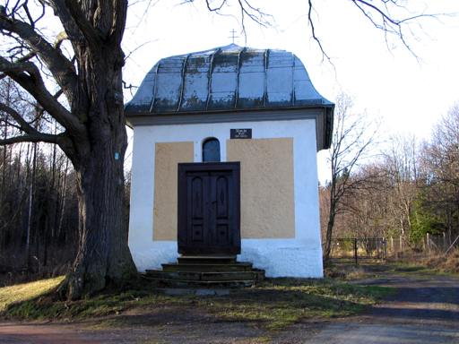 | Z zewnątrz kaplica ta niczym specjalnie nie wyróżnia się od innych. Stoi trochę na uboczu, na skraju lasu.
kliknij na zdjęcie z lewej strony aby powiększyć do rozmiaru 1024x768, 141 kB |
| 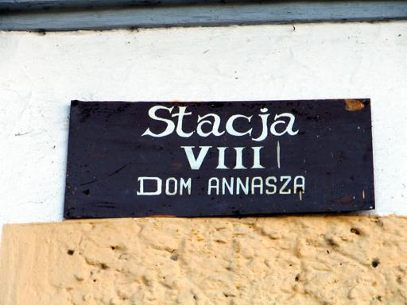 | Napis nad drzwiami informuje, że jest to VIII Stacja, Dom Annasza. W rzeczywistości w budynku tym znajdują się stacje VIII i IX.
kliknij na zdjęcie z lewej strony aby powiększyć do rozmiaru 1024x768, 92 kB |
| 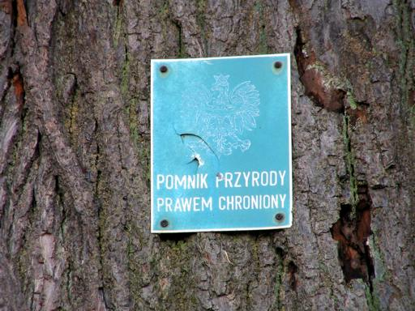 | Rosnące przy wejściu drzewo jest pomnikiem przyrody.
kliknij na zdjęcie z lewej strony aby powiększyć do rozmiaru 1024x768, 175 kB |
| 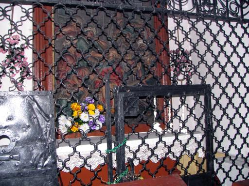 | Po wejściu do środka widzimy pomieszczenie przedzielone stalową kratą. Niestety, próba wykonania zdjęcia z pomocą lampy błyskowej powoduje widoczne "cienie" kraty.
kliknij na zdjęcie z lewej strony aby powiększyć do rozmiaru 1024x768, 185 kB |
| 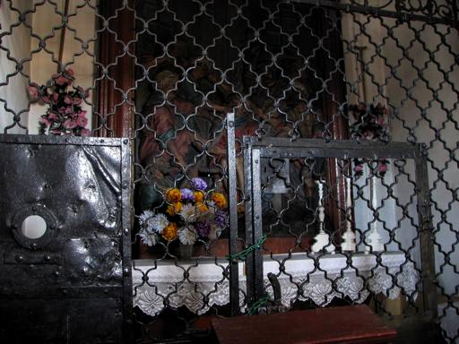 | Dobre zdjęcie bez lampy jest jednak trudne do wykonania (to akurat nie jest dobre :-)
kliknij na zdjęcie z lewej strony aby powiększyć do rozmiaru 1024x768, 142 kB |
| 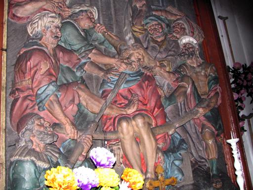 | Za kratą płaskorzeźba "Naigrywanie się żołnierzy".
kliknij na zdjęcie z lewej strony aby powiększyć do rozmiaru 1024x768, 147 kB |
| 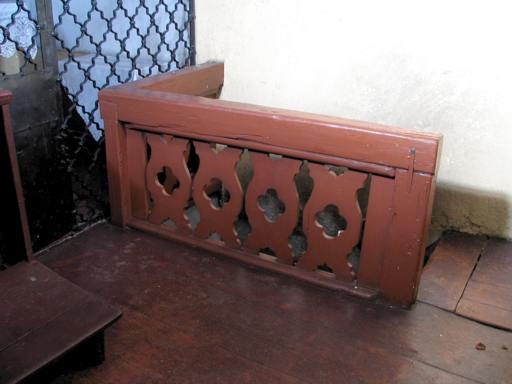 | Po prawej stronie ...
kliknij na zdjęcie z lewej strony aby powiększyć do rozmiaru 1024x768, 79 kB |
| 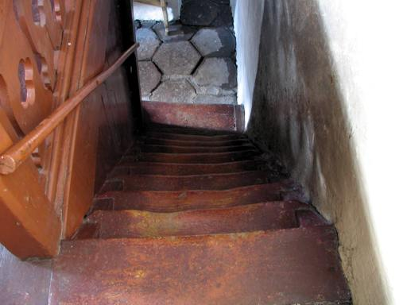 | ... są schody, którymi można zejść ...
kliknij na zdjęcie z lewej strony aby powiększyć do rozmiaru 1024x768, 88 kB |
| 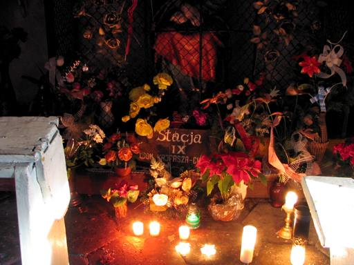 | ... do najbardziej ciekawej stacji Drogi Krzyżowej - Domu Kajfasza - Ciemnicy. Jest to miejsce często odwiedzane przez mieszkańców Krzeszowa.
kliknij na zdjęcie z lewej strony aby powiększyć do rozmiaru 1024x768, 118 kB |
| 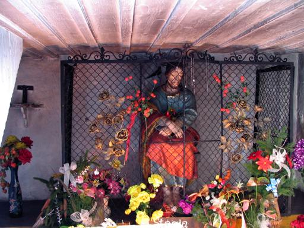 | Na prezentowanych zdjęciach można zobaczyć szczegóły ktoych w rzeczywistości, ze względu na panujące tutaj ciemności, nie widać.
kliknij na zdjęcie z lewej strony aby powiększyć do rozmiaru 1024x768, 167 kB |
| 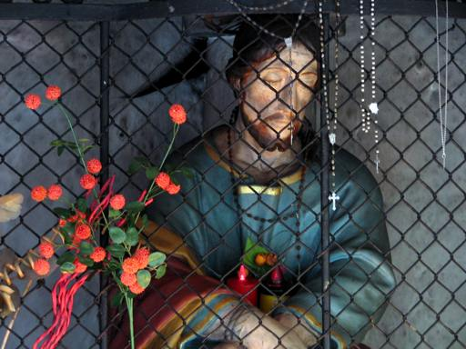 | Ciemnica jest wyjątkową kaplicą, jest to miejsce naprawdę niezwykłe, z dala od całego świata, miejsce ciche i spokojne, gdzie można zebrać na spokojnie wszystkie myśli ....
kliknij na zdjęcie z lewej strony aby powiększyć do rozmiaru 1024x768, 120 kB |
Zdjęcia ne tej stronie zostały wykonane w styczniu 2005 roku.

{kind=link}
{kind=link}
{kind=link}
{kind=link}
{kind=link}
{kind=link}
{kind=link}
{kind=link}
{kind=link}
{kind=link}
{kind=link}